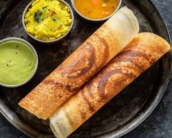
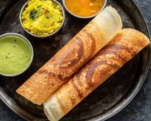

A Culinary Journey: Exploring the Diverse Flavors of India
Indian cuisine is a captivating tapestry of flavors, colors, and aromas, reflecting the country's diverse cultures, traditions, and geography. From the fiery curries of the south to the creamy dals of the north, each region boasts its unique culinary identity, offering a delicious adventure for the senses.
Aromatic Spices and Diverse Ingredients:
The heart and soul of Indian cuisine lie in its vibrant use of spices. Cardamom, cloves, cinnamon, turmeric, coriander, cumin, fenugreek, and chilies are just a few of the many spices that lend their magic to Indian dishes, creating a complex and captivating aroma that entices the palate.
 

Indian cuisine is also distinguished by its sophisticated use of herbs and vegetables.
The
country's
rich
agricultural
heritage has resulted in a diverse array of produce, from the tropical fruits of the south to the hearty
vegetables
of
the
north. The country's fertile soil and temperate climate also support a wide variety of grains, including rice,
wheat,
and
millet, which are used to make the country's many breads and cereals.